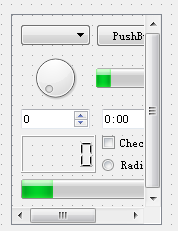
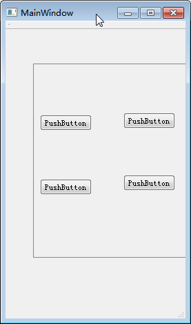

Scroll
O controle de área de rolagem qscrollarea é usado para exibir o conteúdo dos subcomponentes em uma tela. Se a peça exceder o tamanho da tela, a visualização pode fornecer uma barra de rolagem para que toda a área da peça possa ser vista.
Qscrollarea pertence à classe de contêiner de controle e pode ser arrastado diretamente para fora da interface do usuário.
Para o qscrollarea, o mais difícil de entender é: como controlá-lo para que apareça quando queremos que apareça uma barra de rolagem.
Arrastamos uma qscrollarea e depois arrastamos quatro botões para ela. As informações de observação são as seguintes:
Pode-se descobrir que os quatro botões não estão localizados diretamente em qscrollarea, mas em seu membro scollareawidgetcontents. O tipo deste membro também é o tipo de controle QWidget, ou seja, o próprio container do qscrollarea possui duas camadas. Os botões e outros controles que colocamos estão todos localizados na camada scrllareawidgetcontents. A seguir, chamo qscrollarea.widget “contêiner interno” ou “camada de conteúdo”. O contêiner interno é um controle filho de qscrollarea.
“Camada de conteúdo” é equivalente a uma tela grande. Botões, rótulos e outros controles são desenhados na tela, enquanto qscrollarea é equivalente a uma pequena janela. Através desta pequena janela, podemos ver uma pequena parte do conteúdo na tela. Arrastar a barra de rolagem equivale a mover a tela atrás da janela, para que possamos ver o conteúdo em diferentes posições na tela através da janela.
Esta tela é essencialmente um QWidget. Se o qscrollarea for arrastado da interface do UI Designer, o QT criará automaticamente esta tela para nós. Se você usar o código qscrollarea new, não esqueça de criar um widget de tela ao mesmo tempo e associar a tela a qscrollarea através de qscrollarea:: setwidget (QWidget *).
Há um poço aqui. Se você escrever uma subclasse de qscrollarea com funções mais fortes, suponha que ela seja chamada qscrollareaex (há uma tela nela e alguns botões na tela). Ao promover qscrollarea para qscrollareaex na interface do UI Designer, você descobrirá que os botões não são exibidos. Por quê? Porque no código da interface do usuário gerado automaticamente pelo QT, new cria um controle cortina e atribui a cortina vazia ao objeto qscrollareaex, o que é realmente estúpido.
Existem duas soluções:
① use o código new qscrollareaex,
② arraste um controle QWidget diferente de qscrollarea na interface do usuário e promova-o para qscrollareaex.
Depois de entender a relação entre a tela e a janela de observação, você pode resumir facilmente as etapas de programação padrão do qscrollarea, que podem ser divididas nos seguintes casos:
Implementação de código puro Qscrollarea:
(1) nova QscrollArea
(2) Recipiente de tela dentro de novo
(3) Novo layout, como layout de grade, qgridlayout (as três primeiras etapas não estão em ordem) ou outro layout que você deseja usar
(4) Adicione os controles que você deseja ao layout (este passo deve ser após o passo 3, não é absurdo)
(5) Associar “controle cortina” e “layout” (esta etapa é salva se o layout for construído no controle cortina ao criar o layout)
(6) Configure a tela para qscroolarea, ou seja, chame qscrollarea:: setwidget (QWidget *), que deve estar após os passos 4 e 5.
Segue o código do mainwindow.cpp:
mainwindow.cpp
#include "mainwindow.h"
#include "ui_mainwindow.h"
#include <QHBoxLayout>
#include <QPushButton>
#include <QScrollArea>
MainWindow::MainWindow(QWidget *parent) :
QMainWindow(parent),
ui(new Ui::MainWindow)
{
ui->setupUi(this);
QScrollArea * scrollArea = new QScrollArea(this);
QWidget * pWgt = new QWidget;
QHBoxLayout *pLayout = new QHBoxLayout();// Layout de grade
for(int i = 0; i < 100; i++)
{
QPushButton *pBtn = new QPushButton();
Pbtn - > settext (qstring ("button% 1"). Arg (I));
pBtn->setMinimumSize(QSize(60,30)); //width height
pLayout->addWidget(pBtn);// Adicionar botão ao controle de layout
}
pWgt->setLayout(pLayout);
//Esta frase setwidget deve ser colocada no pwgt após todo o conteúdo ser preparado, caso contrário há um problema com a exibição
scrollArea->setWidget(pWgt);
setCentralWidget(scrollArea);
}
MainWindow::~MainWindow()
{
delete ui;
}
Qscrollarea é arrastado diretamente da interface do usuário
Se o controle na área de rolagem for um código novo, as etapas de programação são as seguintes:
Basta fazer os passos (3), (4) e (5) da situação anterior.
Qscrollarea e seus controles são arrastados diretamente para fora da interface do usuário
Nesse caso, não há necessidade de escrever código. Basta colocar os controles na área de rolagem e usar qualquer layout, conforme mostrado na Figura 2 abaixo:
Resuma em uma frase quando a barra de rolagem aparecer em qscrollarea
Desde que o tamanho do controle de tela scollareawidgetcontents exceda o tamanho de qscrollarea, a barra de rolagem aparecerá automaticamente; Se a tela for menor que a janela de visualização, a barra de rolagem não aparecerá.
Por fim, vejamos alguns exemplos
Eu defino a largura e a altura mínimas do membro scollareawidgetcontents para 500 * 1000. É óbvio que o qscrollarea não pode acomodar scrollareawidgetcontents tão altos em altura. De fato, de acordo com os resultados, já existe uma barra de rolagem antes de executar o programa:
Vamos executar o programa e, em seguida, estreitar a janela para ver se a barra de rolagem horizontal aparecerá automaticamente quando a janela < scollareawidgetcontents valor mínimo 500 * 1000. Observando a figura abaixo, verificamos que o efeito desejado não apareceu.
